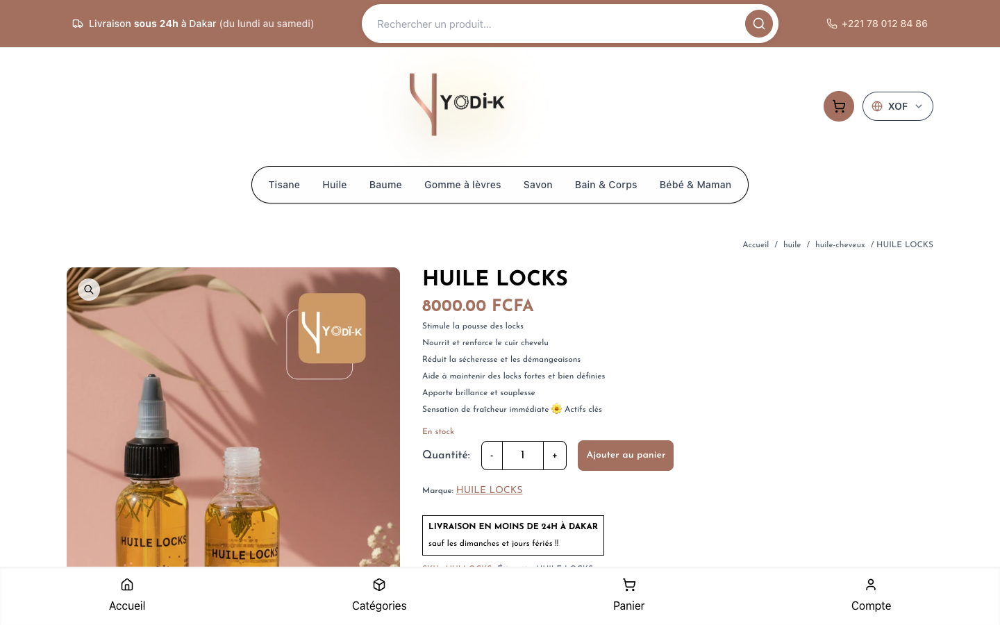

2 octobre 2026 · Corrections locales, non déployées · Référence Git dd55bbf
Cause principale confirmée : les images produits en base64 étaient incorporées dans le HTML, les réponses JSON et les paniers. L’accueil pesait 13,78 Mo de HTML ; la réponse des trois huiles pesait 2 568 530 octets. Après correction : 0,20 Mo de HTML et 2 363 octets pour la même réponse produits.
Catalogue public figé de six produits. Même Next.js 15.5.9 et même compilateur webpack pour les deux copies. Le build réel du projet passe avec son script Turbopack habituel. Ordinateur : 1440 × 900, DPR 1, sans limitation réseau. Mobile : 390 × 844, DPR 3, débit descendant 1,6 Mbit/s, montant 0,75 Mbit/s, latence 150 ms, CPU ralenti ×4.
Cache froid = cache HTTP du navigateur vidé ; cache chaud = conservé. Le cache des images du serveur n’est pas purgé. Une observation par cas, sans moyenne statistique. La base est remplacée uniquement dans les copies temporaires de benchmark ; ces fixtures ne sont pas intégrées au projet ni déployées.
| Page | Profil | Cache | LCP | CLS | Chargement complet + produits présents |
|---|---|---|---|---|---|
| Accueil | Ordinateur | Froid | 0,30 s → 0,18 s | 0.0000 → 0.0000 | 0,53 s → 0,16 s |
| Accueil | Ordinateur | Chaud | 0,23 s → 0,08 s | 0.0000 → 0.0000 | 0,48 s → 0,08 s |
| Liste huiles | Ordinateur | Froid | 0,05 s → 0,04 s | 0.0000 → 0.0000 | 0,28 s → 0,28 s |
| Liste huiles | Ordinateur | Chaud | 0,04 s → 0,05 s | 0.0000 → 0.0000 | 0,25 s → 0,14 s |
| Fiche Huile Locks | Ordinateur | Froid | 0,16 s → 0,09 s | 0.0078 → 0.0000 | 0,19 s → 0,53 s |
| Fiche Huile Locks | Ordinateur | Chaud | 0,19 s → 0,05 s | 0.0078 → 0.0000 | 0,19 s → 0,14 s |
| Accueil | Mobile | Froid | 15,72 s → 1,64 s | 0.0000 → 0.0000 | 55,05 s → 5,46 s |
| Accueil | Mobile | Chaud | 13,73 s → 0,24 s | 0.0000 → 0.0000 | 51,58 s → 0,35 s |
| Liste huiles | Mobile | Froid | 0,90 s → 0,92 s | 0.0000 → 0.0000 | 30,23 s → 4,38 s |
| Liste huiles | Mobile | Chaud | 0,20 s → 0,21 s | 0.0000 → 0.0000 | 0,81 s → 0,33 s |
| Fiche Huile Locks | Mobile | Froid | 15,99 s → 2,33 s | 0.0080 → 0.0000 | 16,01 s → 4,05 s |
| Fiche Huile Locks | Mobile | Chaud | 12,20 s → 0,72 s | 0.0080 → 0.0000 | 12,46 s → 0,74 s |
La dernière colonne attend l’événement load et la présence du premier bouton d’ajout au panier. Ce n’est pas le moment le plus précoce où le produit commence à s’afficher. Le LCP de la liste correspond au logo dans le premier écran : il ne résume pas le chargement de toute la liste.
| Page | Profil | Cache | TTFB | HTML décodé | JS transféré | Images séparées |
|---|---|---|---|---|---|---|
| Accueil | Ordinateur | Froid | 121 ms → 37 ms | 13775,5 ko → 198,7 ko | 304,3 ko → 304,6 ko | 323,7 ko → 323,7 ko |
| Accueil | Ordinateur | Chaud | 94 ms → 33 ms | 13775,5 ko → 198,7 ko | 0,0 ko → 0,0 ko | 0,0 ko → 0,0 ko |
| Liste huiles | Ordinateur | Froid | 24 ms → 9 ms | 34,6 ko → 58,6 ko | 309,4 ko → 294,4 ko | 6,1 ko → 68,6 ko |
| Liste huiles | Ordinateur | Chaud | 8 ms → 10 ms | 34,6 ko → 58,6 ko | 0,0 ko → 0,0 ko | 0,0 ko → 0,0 ko |
| Fiche Huile Locks | Ordinateur | Froid | 9 ms → 8 ms | 39,1 ko → 67,1 ko | 311,4 ko → 296,0 ko | 6,1 ko → 72,2 ko |
| Fiche Huile Locks | Ordinateur | Chaud | 7 ms → 8 ms | 39,1 ko → 67,1 ko | 0,0 ko → 0,0 ko | 0,0 ko → 0,0 ko |
| Accueil | Mobile | Froid | 105 ms → 30 ms | 13775,5 ko → 198,7 ko | 304,3 ko → 304,6 ko | 327,6 ko → 327,6 ko |
| Accueil | Mobile | Chaud | 101 ms → 19 ms | 13775,5 ko → 198,7 ko | 0,0 ko → 0,0 ko | 0,0 ko → 0,0 ko |
| Liste huiles | Mobile | Froid | 10 ms → 10 ms | 34,6 ko → 58,6 ko | 309,4 ko → 294,4 ko | 8,8 ko → 181,2 ko |
| Liste huiles | Mobile | Chaud | 10 ms → 13 ms | 34,6 ko → 58,6 ko | 0,0 ko → 0,0 ko | 0,0 ko → 0,0 ko |
| Fiche Huile Locks | Mobile | Froid | 9 ms → 7 ms | 39,1 ko → 67,1 ko | 311,4 ko → 296,0 ko | 8,8 ko → 81,6 ko |
| Fiche Huile Locks | Mobile | Chaud | 10 ms → 10 ms | 39,1 ko → 67,1 ko | 0,0 ko → 0,0 ko | 0,0 ko → 0,0 ko |
Le poids du HTML est avant compression réseau. Les colonnes JS et images proviennent de Resource Timing, en octets transférés avec les en-têtes. Les images base64 de référence sont contenues dans le HTML ou l’API ; elles ne sont donc pas comptées dans « Images séparées ». Le JavaScript global varie peu : le gain principal vient des images et des cascades de chargement.
Clic sur le lien réel de la page Catégories, puis attente des produits. Mêmes profils et débit simulé ; cache HTTP normal activé.
| Profil | Cache | Temps avant → après |
|---|---|---|
| Ordinateur | Froid | 0,69 s → 0,31 s |
| Ordinateur | Chaud | 0,33 s → 0,29 s |
| Mobile | Froid | 23,76 s → 1,58 s |
| Mobile | Chaud | 0,99 s → 0,43 s |
Les mesures locales excluent la latence réelle MongoDB : la connexion directe depuis ce poste échouait, et le build initial échouait sur les connexions faites à l’import. Les mesures de production avant modification ont montré des réponses lentes et une forte variabilité réseau, puis un timeout sur la fiche mobile. Aucun chiffre après en production n’est annoncé : les corrections ne sont pas déployées.
Aucune mesure INP terrain collectée. Le parcours de création de commande authentifié n’a pas été soumis. Aucun index ajouté sans plan de requête mesuré sur la vraie base ; les requêtes restent bornées et la recherche existante est conservée.

app/[category]/[subcategory]/[productname]/loading.tsxapp/[category]/[subcategory]/[productname]/page.tsxapp/[category]/[subcategory]/page.tsxapp/[category]/loading.tsxapp/[category]/page.tsxapp/api/auth/[...nextauth]/option.tsapp/api/checkout/route.tsapp/api/currency/route.tsapp/api/forgot-password/route.tsapp/api/order/get-orders/route.tsapp/api/order/getstats/route.tsapp/api/order/last/route.tsapp/api/product-images/[productid]/route.tsapp/api/products/[productid]/route.tsapp/api/products/route.tsapp/api/register/route.tsapp/api/user/delete-account/route.tsapp/api/user/route.tsapp/api/user/update/route.tsapp/checkout/page.tsxapp/page.tsxapp/panier/page.tsxapp/recherche/page.tsxcomponents/Hero.tsxcomponents/ProductCarousel.tsxcomponents/ProductCategory.tsxcomponents/ProductDetail.tsxcomponents/ProductDetailSkeleton.tsxcomponents/ProductSubcategory.tsxlib/cart-images.tslib/checkout-products.tslib/db.tslib/models/product.tslib/product-data.tslib/product-query.tslib/store-manage.tsscripts/cart-images.test.mjsscripts/checkout-products.test.mjsscripts/db.test.mjsMesures brutes et protocole · Build · Validation navigateur · 8 tests ciblés · Migration ancien panier · Lint global · TypeScript global
Documentation vérifiée : Next.js 15 Image, Next.js 15 Link et préchargement, Next.js 15 cache, React : erreur d’hydratation.